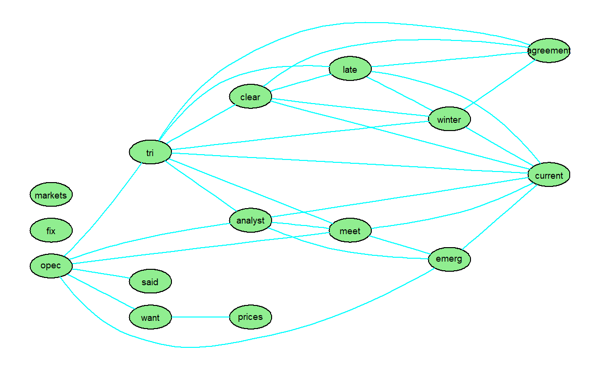

Table of Contents
서론
텍스트마이닝은 전통적인 질적 연구기법에 적합하지 않은 대규모 데이터 셋을 분석하고 이해하는 데 널리 사용되는 방법
KOSPI200 예제 데이터
국내의 KOSPI200 데이터를 웹 크롤링(web상에 존재하는 콘텐츠를 수집하는 작업)
국내 KOSPI200 데이터의 순위 50위권 주식 종목 명, 시가총액을 가져오도록 한다.

웹 크롤링(web crawling)
웹 크롤링은 다양한 방법이 존재하지만 여기서는 패키지 [httr], [XML]을 사용하여 크롤링을 실시한다.
# install.packages("pacman")
pacman::p_load("httr", "XML")
web <- GET('https://finance.naver.com/sise/sise_market_sum.nhn?&page=1') # KOSPI200 url
web
Response [https://finance.naver.com/sise/sise_market_sum.nhn?&page=1]
Date: 2019-12-05 13:57
Status: 200
Content-Type: text/html;charset=EUC-KR
Size: 93.7 kB
<!-- global include -->
...
web.c <- htmlParse(web) # 위에서 가져온 url을 분석 가능한 형태로 변경 web.c는 사이트의 모든 소스코드가 담겨있으므로 우리가 원하는 정보만 가져오기 위해서는 몇 가지 작업이 더 필요하다.
우선, Chrome을 이용하여 크롤링 할 사이트에 접속 한 다음 F12를 누르면 다음과 같은 관리자모드 창이 나온다.

- (ㄱ) 원하는 정보의 소스코드를 선택 할 수 있는 버튼을 누른 후
- (ㄴ) 종목 명을 가져와야 하므로 종목명을 클릭한다.
- (ㄷ) 그러면 이렇게 우리가 선택한 ’삼성전자’의 코드가 표시되어진다.
- (ㄹ) 표시되어진 부분을 마우스 우클릭하여 Copy - Copy XPath를 한다.
Copy를 r에 붙여넣기 하면 다음과 같이 소스코드가 나오고, 같은 방법으로 SK하이닉스의 소스코드를 가져오면 다음과 같다.
두 소스코드의 차이점은 tr[2]와 tr[3]으로 패턴을 파악 할 수 있다. 그러나 종목이 5순위 간격으로 tr[]가 4씩 증가한다.
시가총액이 6위인 ’현대차’는 소스코드가 tr[10]으로 시작한다.
//*[@id="contentarea"]/div[3]/table[1]/tbody/tr[2]/td[2]/a # 삼성전자 소스코드
//*[@id="contentarea"]/div[3]/table[1]/tbody/tr[3]/td[2]/a # SK하이닉스 소스코드
//*[@id="contentarea"]/div[3]/table[1]/tbody/tr[10]/td[2]/a # 현대차 소스코드 for문을 사용하여 시가총액 상위 50개 종목(stock_item) 크롤링
for(i in 1:10){
# 5순위 간격으로 숫자가 4씩 증가로 인해 각 시작점 정해주기
num <- seq(1,80,8)+1
# 소스코드 경로
path1 <- '//*[@id="contentarea"]/div[3]/table[1]/tbody/tr['
path2 <- ']/td[2]/a'
for(j in 0:4){
# 각 시작점부터 5개씩 출력
path <- paste(path1, num[i]+j, path2)
# 만들어진 경로 환경에 저장
assign(paste(paste("stock_item", i,sep=""), j, sep="_"), path)
}
}
# for문을 사용하여 종목 명만 가져오기
si <- c()
for(i in 1:50){
si[i] <- xpathSApply(web.c, data.frame(mget(ls(pattern="stock_item")))[,i], xmlValue)
}
si
[1] "삼성전자" "SK하이닉스" "삼성전자우"
[4] "NAVER" "삼성바이오로직스" "현대중공업지주"
[7] "현대글로비스" "LG디스플레이" "미래에셋대우"
[10] "GS" "현대차" "현대모비스"
[13] "셀트리온" "LG화학" "신한지주"
[16] "POSCO" "LG생활건강" "KB금융"
[19] "SK텔레콤" "삼성물산" "한국전력"
[22] "기아차" "SK" "삼성SDI"
[25] "삼성에스디에스" "삼성생명" "KT&G"
[28] "SK이노베이션" "카카오" "LG"
[31] "LG전자" "엔씨소프트" "삼성화재"
[34] "아모레퍼시픽" "하나금융지주" "S-Oil"
[37] "한국조선해양" "삼성전기" "우리금융지주"
[40] "고려아연" "넷마블" "롯데케미칼"
[43] "KT" "웅진코웨이" "기업은행"
[46] "KODEX 200" "아모레G" "강원랜드"
[49] "LG유플러스" "한온시스템" 같은 방법으로 각 종목의 시가총액을 가져온다.
for(i in 1:10){
num <- seq(1,80,8)+1
path1 <- '//*[@id="contentarea"]/div[3]/table[1]/tbody/tr['
path2 <- ']/td[7]'
for(j in 0:4){
path <- paste(path1, num[i]+j, path2)
assign(paste(paste("total_price", i,sep=""), j, sep="_"), path)
}
}
tp <- c()
for(i in 1:50){
tp[i] <- xpathSApply(web.c, data.frame(mget(ls(pattern="total_price")))[,i], xmlValue)
}
tp
[1] "2,955,042" "573,666" "336,561" "281,007" "262,013"
[6] "55,537" "55,312" "52,778" "47,925" "45,064"
[11] "252,128" "233,501" "216,249" "207,189" "205,803"
[16] "199,658" "195,071" "195,049" "192,175" "190,638"
[21] "184,244" "177,346" "176,253" "152,657" "148,565"
[26] "143,600" "131,389" "131,301" "128,686" "122,170"
[31] "114,553" "110,209" "109,673" "108,733" "107,337"
[36] "99,298" "86,697" "85,898" "82,339" "77,556"
[41] "74,425" "71,978" "69,847" "68,486" "67,816"
[46] "67,020" "63,245" "62,578" "59,379" "58,184"
tp <- as.numeric(gsub(",", "", tp)) # ,가 있으면 numeric로 변환 불가능
data <-data.frame(si, tp)
data <- data[c(order(data$tp, decreasing = T)),] # 데이터 시가총액 기준 내림차순 정렬
pacman::p_load("DT")
datatable(data)워드클라우드 (word cloud)
# install.packages("wordcloud")
library(wordcloud)
# 코드 옵션
# wordcloud(words, freq, scale = c(4, 0.5), min.freq = 3, max.words = Inf,
# random.order = T, random.color = F, rot.per = 0.1, colors = "black",
# ordered.colors = F, use.r.layout = F, fixed.asp = T, ...)- words : 단어
- freq : 빈도
- scale =c(4, 0.5): 길이 2의 벡터로 단어의 크기 범위를 나타냄
- min.freq=3 : 빈도가 3 이하인 단어는 플롯에서 제외함
- max.words=Inf :그려질 최대 단어의 수. 최소 빈도 항목은 생략됨
- radom.order=T : 단어를 랜덤하게 배치함. F는 내림차 빈도로 그려짐
- random.color=F : 색상의 랜덤하게 선택함. F는 빈도에 따라 선택됨
- rot.per=0.1 : 90도 회전 단어의 비율
- colors=“black” : 최소 ~ 최대 빈도 색상 단어
- ordered.colors=F : T이면 색상이 순서대로 단어에 할당됨
워드클라우드 적용
웹 크롤링을 사용하여 얻은 data를 가지고 워드클라우드 적용
# install.packages("pacman")
pacman::p_load("wordcloud","htmltools", "htmlwidgets", "metricsgraphics","RColorBrewer")
wordcloud(data$si,
data$tp,
scale=c(4, 0.5),
rot.per = 0.25,
random.order = F,
random.color = T,
colors= brewer.pal(8, "Dark2"))
-상위 20위 종목 표현
data[1:20,] %>%
mjs_plot(x=tp, y=si, width=600, height=500) %>%
mjs_bar() %>%
mjs_axis_x(xax_format = 'plain')텍스트 마이닝 (text mining)
{tm} 패키지에서 제공하는 자료를 이용하여 텍스트마이닝을 수행. 이 자료는 20개의 XML 파일로 구성되어있다.
# install.packages("pacman")
pacman::p_load("tm", "XML", "Snowballc")
reut21578 <- system.file("texts", "crude", package="tm")
text_corpus <- VCorpus(DirSource(reut21578),
readerControl=list(reader=readReut21578XMLasPlain))
# 첫 번째 텍스트
writeLines(as.character(text_corpus[[1]]))
Diamond Shamrock Corp said that
effective today it had cut its contract prices for crude oil by
1.50 dlrs a barrel.
The reduction brings its posted price for West Texas
Intermediate to 16.00 dlrs a barrel, the copany said.
"The price reduction today was made in the light of falling
oil product prices and a weak crude oil market," a company
spokeswoman said.
Diamond is the latest in a line of U.S. oil companies that
have cut its contract, or posted, prices over the last two days
citing weak oil markets.
Reuter데이터 정제 (cleaning)
text_corpus <- tm_map(text_corpus, stripWhitespace) # 공백제거
text_corpus <- tm_map(text_corpus, content_transformer(tolower)) # 소문자로 변환
text_corpus <- tm_map(text_corpus, removeWords, stopwords("english"))# 불용어(stopwords) 제거
text_corpus <- tm_map(text_corpus, stemDocument) # 줄기단어 공통 어근
text_corpus <- tm_map(text_corpus, removeNumbers) # 숫자 제거
text_corpus <- tm_map(text_corpus, removePunctuation) # 구두점 제거 문서-단어 행렬 구성
dtm <- DocumentTermMatrix(text_corpus)
inspect(dtm) # 구조 확인
<<DocumentTermMatrix (documents: 20, terms: 847)>>
Non-/sparse entries: 1622/15318
Sparsity : 90%
Maximal term length: 16
Weighting : term frequency (tf)
Sample :
Terms
Docs barrel bpd dlrs last market mln oil opec price said
144 0 4 0 1 4 4 12 15 4 11
236 4 7 2 4 3 4 7 8 5 10
237 0 0 1 3 0 1 3 1 0 1
242 0 0 0 0 2 0 3 2 1 3
246 1 0 0 2 0 0 5 2 1 5
248 3 2 4 1 9 3 9 6 8 7
273 3 8 2 7 1 9 5 5 4 8
489 2 0 1 0 0 3 4 0 3 2
502 2 0 1 0 0 3 5 0 3 2
704 0 0 0 0 3 0 3 0 2 4
dim(dtm) # 단어 수가 847개
[1] 20 847희소한 단어 제거
- 군집 등에 유용
- sparse= 는 1에 가까울수록 희소함(0~1)
dtm2 <- removeSparseTerms(dtm, sparse=0.95) dim(dtm2) # 단어가 크게 줄어듦 ( 847 -> 306)[1] 20 306- 텍스트 분석의 어려움 중 하나는 빈번한 단어가 특정 분석에 더 많은(또는 적은) 가치가 있는지를 결정하는 것.
- 4개 이상 문서에 나타나고, 단어의 길이가 3~15인 단어를 추출
dtmr <- DocumentTermMatrix(text_corpus, control=list(wordLengths =c(3, 15), bounds=list(global=c(4,20)))) dim(dtmr) # 단어가 91개로 줄어듦[1] 20 91단어의 출현 빈도
freq <- sort(colSums(as.matrix(dtm)), decreasing = T) head(freq, 50)oil said price opec mln market last 85 73 48 47 31 26 24 barrel bpd dlrs crude reuter saudi will 23 23 23 21 21 18 18 kuwait one offici prices new pct accord 17 17 16 15 14 14 12 meet futur govern month product sheikh year 12 11 11 11 11 11 11 say world also arabia billion compani export 10 10 9 9 9 9 9 minist output petroleum produc quota report reserv 9 9 9 9 9 9 9 sourc analyst group gulf help increas post 9 8 8 8 8 8 8 sell 8빈발 단어 탐색
- findAssocs() 함수는 자주 사용되는 빈발 단어를 탐색. 이 함수는 문서-단어 행렬에서 트정 단어 (term= 로 지정)와 상관 제한(0~1)을 만족하는 단어를 찾음. 상관제한 1은 항상 함께 나타남을 의미
# 단어 "oil"과 60% 이상 같이 나타나는 단어를 찾기 findAssocs(dtm, term="oil", 0.6) # 단어 "kuwait"과 80% 이상 같이 나타나는 단어를 찾기 findAssocs(dtm, terms = "kuwait", 0.8)
단어의 시각화
- 특정 단어와 상관된 단어의 시각화
- 기본적으로 plot() 함수는 선택된 상관관계 임계값과 함께 소수의 무작위로 선택된 단어에 대해 그림을 그림. 그러나 일반적으로 특정 관심사와 관련된 단어를 그리는 것이 훨씬 더 유용함
상관이 0.7이상인 단어 그림
pacman::p_load("BiocManager", "Rgraphviz") # 단어는 임의로 선택됨 plot(dtm, corThreshold = 0.7)상관이 0.8 이상인 단어 간의 그림
plot(dtm, terms=names(findAssocs(dtm, term="oil", 0.7)[["oil"]]), corThreshold = 0.8)
plot 옵션 설정
plot(dtm, terms=names(findAssocs(dtm, term="oil", 0.7)[["oil"]]), corThreshold = 0.8, attrs=list(node=list(lael="foo", fillcolor="lightgreen", fontsize="16", shape="ellipse"), edge=list(color="cyan"), graph=list(rankdir="LR")))
워드클라우드
pacman::p_load("wordcloud")기본 워드클라우드
wordcloud(names(freq), freq, min.freq = 5)
디자인 워드클라우드
wordcloud(names(freq), freq, min.freq = 5, max.words = Inf, random.order = F, colors=brewer.pal(8, "Accent"), scale=c(7,0.4), rot.per = 0)단어 클러스터링
# 20여개 단어를 사용함(scarse=옵션으로 조절) tdm <- TermDocumentMatrix((text_corpus)) tdm2 <- removeSparseTerms(tdm, sparse=0.7) dim(tdm2)[1] 24 20d <- dist(as.matrix(tdm2)) hc <- hclust(d) plot(hc) groups <- cutree(hc, k=3) rect.hclust(hc, k=3, border="red") - 특정 단어와 상관된 단어의 시각화
- findAssocs() 함수는 자주 사용되는 빈발 단어를 탐색. 이 함수는 문서-단어 행렬에서 트정 단어 (term= 로 지정)와 상관 제한(0~1)을 만족하는 단어를 찾음. 상관제한 1은 항상 함께 나타남을 의미